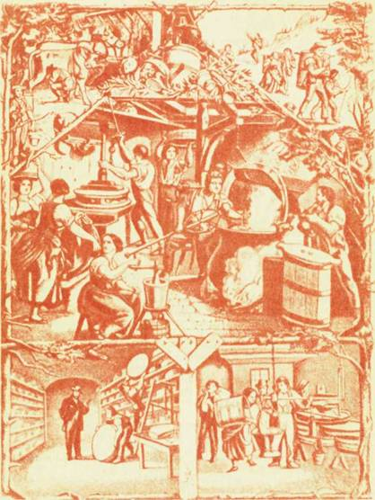

Сыр сегодня

Сыр вырабатывают и едят на всех континентах. Больше всего в Европе, на втором месте — Северная Америка. А в ряде стран Азии и Африки промышленное производство сыра находится еще в стадии становления, там и потребление его низкое, а малообеспеченные слои коренного населения даже не знают, что такое настоящий сыр. В странах с хорошо развитым молочным хозяйством, особенно в тех, где сыр исстари вырабатывается, производство и потребление его довольно высокие.
В мире налажен интенсивный торговый обмен этим продуктом. Пути движения сыра соединяют страны востока и запада, севера и юга, пересекая Тихий и Атлантический океаны, пустыни и джунгли. Есть страны, для которых сыр стал одной из важных статей экспорта, другие его только ввозят, третьи и ввозят, и вывозят.
Главными экспортерами сыра являются Нидерланды, Новая Зеландия, Франция, Дания, Швейцария. Наиболее значительные импортеры — Великобритания и ФРГ.
Сейчас на нашей планете насчитывается более миллиарда голов крупного рогатого скота, включая зебу и буйволов, широко распространенных в субтропической и тропической зонах (мы не берем в расчет поголовье овец и коз, которое значительно больше).

Гравюра XVIII в., показывающая поэтапно процесс сыроделия, начиная с доения коров и кончая созреванием сыра, в Эмментале — на родине швейцарского сыра
На долю Азии и Африки приходится примерно половина этого поголовья, и вместе с тем именно в Азии и Африке производится очень мало сыра. На этих континентах большая часть скота используется для работы в сельском хозяйстве и в качестве транспортной силы.
Масаи, кочующие со стадами в степях Восточной Африки, измеряют свое богатство количеством животных, а не их продукцией — мясом и молоком. Подобные критерии благоденствия и счастья существуют и у некоторых других народов Африки и Азии.
В ряде развивающихся стран Африки производство сыров, главным образом свежих, осваивается на молочных заводах, построенных за последние годы. Из африканских стран следует выделить Египет, где около 40 % получаемого молоке используется на выработку сыра в крестьянских хозяйствах и на молочных заводах в городах, выпускающих в основном свежие сыры, а также Кению, где вырабатываются многие виды сыров, в том числе и типа европейских.
На американском континенте страной высокоразвитого сыроделия являются США, занимающие первое место в мире по производству сыра. Большая доля вырабатываемых там сыров приходится на сыр коттедж.
Использование этого продукта в питании определяется в основном традиционными национальными привычками народов, населяющих США.
В разных странах Центральной и Южной Америки сыроделие развито неравномерно, В Бразилии, например, имеются 1700 кустарных сыродельных заводов. Довольно много вырабатывается сыра в Аргентине. За последние годы увеличилось производство его в Венесуэле.
В Латинской Америке известны сыры типа испанских из овечьего молока, итальянских терочных, типа качкавала, крупные твердые.
В Южной Америке насчитывается более 200 млн. голов крупного рогатого скота, но молока здесь получают сравнительно мало, поскольку разводят в основном животных мясных пород.
В прериях Бразилии можно встретить запряженных цугом быков, передвигающих фургон, как во времена освоения Америки, или пастуха-ковбоя верхом на быке. В Азии транспортные функции скота разнообразнее. В ряде стран, например, известны специальные породы скота для перевозки тяжестей, для военных целей, участия в празднествах и зрелищах.
Всеми этими национальными, религиозными и главным образом экономическими причинами объясняется то, что в Азии на 100 голов скота получают молока в 5 раз, а в Африке и Южной Америке в 10 раз меньше, чем в Европе.
Отсюда ясно, что объемы производства сыра зависят не от количества скота, а от культуры и продуктивности животноводства, и прежде всего от уровня техники вообще и техники переработки молока в частности. Все это, а значит, и организация промышленного сыроделия у развивающихся стран впереди.
Ежедневно в мире производится свыше 450 млн. т молока, причем на первом месте по валовому надою стоит наша страна. Более 20 % молока перерабатывается в сыр, мировое производство которого превышает 10 млн. т.
В последние годы производство сыра, как правило, растет, что объясняется увеличением спроса. Цены на продукт на мировом рынке повысились. В некоторых странах (Швейцария, Италия, Голландия, Франция) на производство сыра сейчас используется около 40 % получаемого молока.
Специалисты подсчитали, что в мире сегодня вырабатывают около 1000 разновидностей сыров. Многие из них различаются лишь названиями, так как имеют близкие вкусовые признаки и сходные способы производства. Прародителями многих сыров стали традиционные европейские, такие, как эмментальский (швейцарский), эдамский (голландский), гауда (костромской), чеддер, рокфор, камамбер, лимбургский, итальянские терочные, сыры из овечьего молока и другие.
Заселив Северную Америку, англичане, французы, итальянцы, немцы и другие представители народов Европы и Азии внедрили здесь производство своих национальных сыров. И сейчас в продукции сыроделия США можно обнаружить немало традиционных европейских сыров, хотя они и претерпели некоторые изменения и называются иногда иначе. То же произошло в Центральной и Южной Америке, Австралии и Новой Зеландии.
В ряде стран Азии и Африки, там где уже организовано в ограниченных масштабах промышленное производство сыра, в ассортименте его — в основном виды, характерные для европейских стран, еще недавно господствовавших здесь, и, конечно, национальные.
В европейских странах широко распространены такие сыры, как эмментальский, эдамский, гауда, типа рокфора, чеддер, бри, горгонзола, камамбер. Это дань не только их вкусовым свойствам, но и торговой конъюнктуре — на мировом рынке высоко котируются сыры этих видов.
Тем не менее для каждой страны характерны свои сыры: для Голландии — эдамский и гауда, Швейцарии — эмментальский, США и Англии — чеддер, Франции — мягкие, ФРГ и ГДР — типа бакштейна (подобен нашему латвийскому), для Италии — сыры терочные и из овечьего молока.
Во всем мире сыр оценивается как вкусный и питательный продукт. Но в некоторых странах, где сыр играет видную роль в экономике, откуда в большом количестве идет на мировой рынок, он рассматривается не только как продукт питания, но и как источник благополучия. Есть страны, где сыр — предмет национальной гордости. Это, в частности, Франция и Италия. Названия этих стран перенесены иностранными специалистами и потребителями на большие группы сыров, которые известны сейчас во всем мире как французские и итальянские.
Название сыра происходит, как правило, от названия города, деревни, местности, где он впервые выработан. Таково происхождение названий советских сыров — ярославского, пошехонского, угличского, алтайского, минского, карпатского, эстонского, чуйского, валмиерского и других; французских — рокфора, камамбера, бри; итальянских — пармезана и горгонзолы; голландских — эдамского и гаудэ, английских — чеддера и стилтона и т. д. Некоторые сыры носят названия рек или озер — нямунас (Неман), днестровский, нарочь. Названия других определены величиной («лилипут»), формой (клинковый) или цветом (зеленый, голубой, белый), а иногда назначением (дорожный) или особенностями вкуса (сливочный, пикантный, острый). Среди названий плавленых сыров немало отвлеченных: «Дружба», «Лето», «Янтарь» и пр.
Все эти названия нетрудно запомнить, если они ассоциируются с вкусовыми особенностями носящих их сыров.
В ряде стран сыры по способу потребления разделяются на кухонные и столовые. Кухонные используются в основном для приготовления кушаний, например их натирают для сдабривания различных первых и вторых блюд. Столовые сыры потребляют непосредственно в качестве закуски или десерта.
История сыроделия знает немало случаев, когда в сыр вводили необычные добавки, когда сыром называли продукты, на первый взгляд не имеющие ничего общего с сыром, когда ему придавали затейливую форму или окраску.
Так, во Франции известен сыр в форме сердца, в Англии — в виде ананаса. В той же Англии был так называемый крапивный сыр, который сушили на свежих листьях крапивы, цветочный, в который при изготовлении добавляли цветы розы, гвоздики, ноготков. В Бельгии когда-то делали сыр четырех времен года: каждая четверть четырехугольного бруска имела свой цвет и вкус. Во Франции некоторые сыры вымачивали в уксусе с пряностями. Немцам известен картофельный сыр, приготовляемый из смеси творога с вареным протертым картофелем.